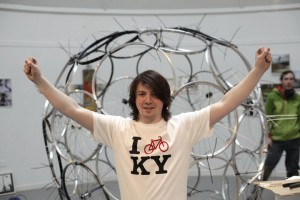
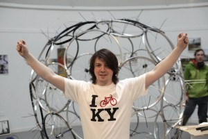

Frame X exhibition opened to a great crowd Thursday evening. Check out the Sperichord musical instrument in the background which was hung from the centre of the round gallery. Fairplay Macdara.
Swanky kbf t-shirts just arrived too !

Your email is never published nor shared. Required fields are marked *
You may use these HTML tags and attributes: <a href="" title=""> <abbr title=""> <acronym title=""> <b> <blockquote cite=""> <cite> <code> <del datetime=""> <em> <i> <q cite=""> <strike> <strong>
<a href="" title=""> <abbr title=""> <acronym title=""> <b> <blockquote cite=""> <cite> <code> <del datetime=""> <em> <i> <q cite=""> <strike> <strong>
I o7o KY
Frame X exhibition opened to a great crowd Thursday evening. Check out the Sperichord musical instrument in the background which was hung from the centre of the round gallery. Fairplay Macdara.
Swanky kbf t-shirts just arrived too !
